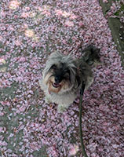
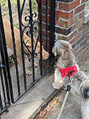
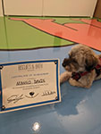

Mango's Corner

Mango V. Davis is a beloved 4-year-old fluffy mutt from the Bronx. After she was found in Pelham Park, she started living at New York Animal Control Center. I was looking for a dog at the time and saw Mango online. I adopted her in person at one of the NYACC adoption trucks. After some vaccinations and spaying, Mango came to her new home. She was nervous at first but soon grew confident and now struts up and down the block, sniffing, barking, and occasionally making friends.
Likes
- Treats
- rice
- fruits and veggies
- peanut butter
- Belly rubs
- Looking out the window
- Blankets and towels
Dislikes
- Items on wheels
- skateboards
- electric bikes
- carts
- Men
- Traffic
- Construction
Friends
- Big Lola (pit mix)
- Little Lola (chihuahua)
- Nala (pit mix)
- Mr. Luciano
- Doggy daycare ladies
- Molly and Lexie (but not their dog)

